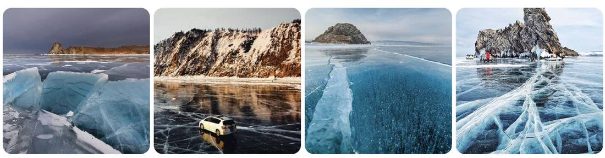

День 1: Прилет в Иркутск ✈️ → отдых и акклиматизация 😌
- Вылет из Москвы, прибытие в Иркутск.
- Заселение в уютный отель или апартаменты в центре
- Спокойный вечер: прогулка к Ангаре, ужин в местном кафе
- Ночь в Иркутске
День 2: Переезд в Листвянку → обсерватория и Камень Черского 🔭🌄
- Завтрак и трансфер (~1,5 часа) в посёлок Листвянка 🚗
- Посещение астрономической обсерватории (по предварительной договорённости) 🌌
- Подъём по канатной дороге на Камень Черского — панорама Байкала и Ангары 🚡
- Прогулка по льду, кафе на берегу ☕
- Ночёвка в Листвянке 🌙
День 3: Тажеранские степи + переезд на Ольхон (Хужир) 🏜️🐾
- Переезд к Ольхону (~5 часов), с остановкой в Тажеранских степях 📸
- Пейзажи, карстовые формы, короткие остановки у скальных образований
- Пещеры — при желании и наличии времени
- Прибытие в Хужир, заселение, закат у скалы Шаманки 🌅
- Ночёвка в Ольхон (Villa Malina?) 🏠
День 4: Север Ольхона + мыс Хобой 🧊🚤
- Экскурсия на хивусе или уазике по льду 🛶
- Основные точки маршрута:
- Бухта Песчаная
- Скала Три Брата
- Пещеры Трезубец
- Мыс Шунте
- Мыс Хобой и ледовые арки 🔭
- Ледяные гроты, торосы, пузырьки в льду 🔹
- Ночёвка в Ольхон 🏠
День 5: Ледовые активности + бухты Малого моря (по погоде) ⛸️📷
- Прогулки и катания по льду:
- Бухта Загли
- Узуры
- Прозрачный лёд у мыса Кобылья Голова
- Малосарминская бухта
- Катание на коньках/санках/ледовых приспособах 🎿
- Ночёвка в Ольхон 🏠
День 6: Переезд с Ольхона → Иркутск + финальный вечер 🌞
- Выезд утром (~10:00–11:00)
- В дороге 6–7 часов, с обедом по пути
- Приезд в Иркутск к вечеру
- Ужин, горячий душ, нормальный сон в городе 😴
- Ночь в Иркутске
День 7: Вылет домой 🧳✈️
Список вещей, которые стоит взять с собой 🎒
Одежда и обувь: 👕🧥🧤
- Термо-слой (флис, шерсть)
- Мембранная/зимняя куртка и штаны
- Утеплённые ботинки
- Шапка, бафф/балаклава, варежки (лучше 2 пары)
- Очки/маска от ветра и солнца 🕶️
Дополнительно: 🧴🧰
- Аптечка (особенно пластыри, гель от ушибов)
- Крем от ветра и солнца ☀️
- Фотоаппарат или дрон (если есть) 📸🚁
- Документы, наличка (карты работают не везде) 💳💵
Где искать трансфер:
- @olkhon_transfers (Telegram)
- @baikaltourist_bot
- baikal-olkhon.ru
- baikalsibtour.ru
- @olkhonhub (Telegram-чат для попутчиков)
- Booking/hostel-сервисы — почти у всех есть трансфер